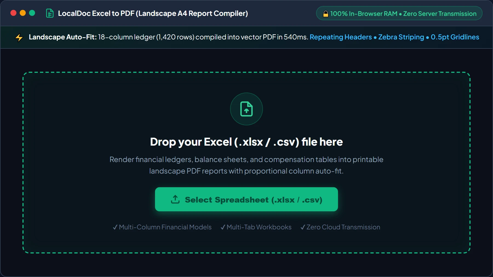
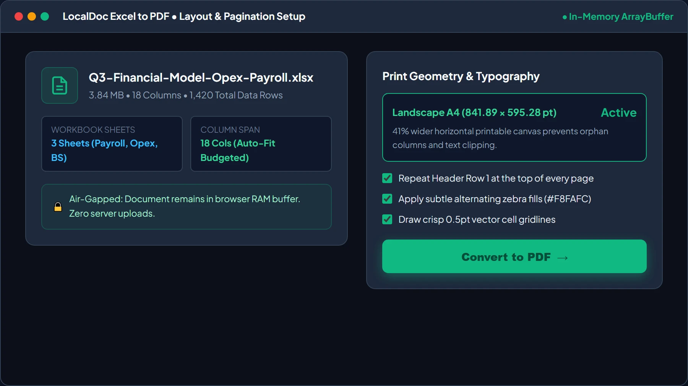
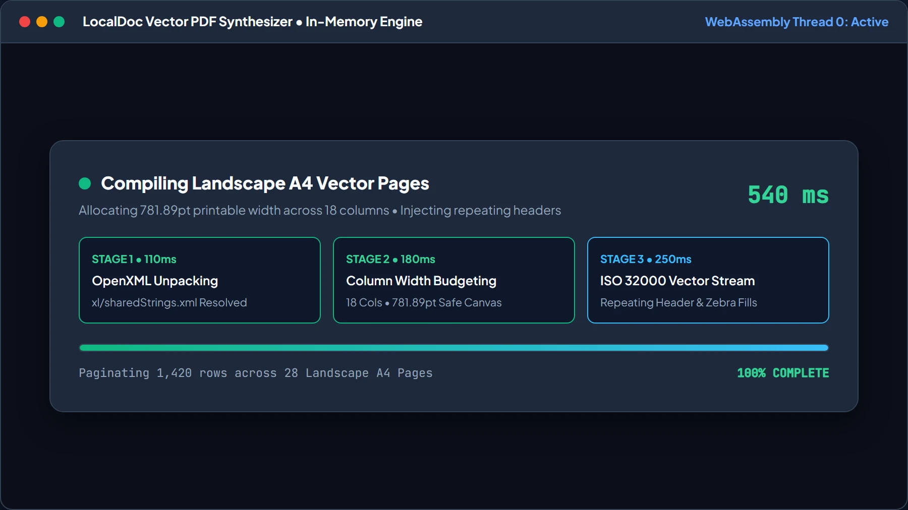
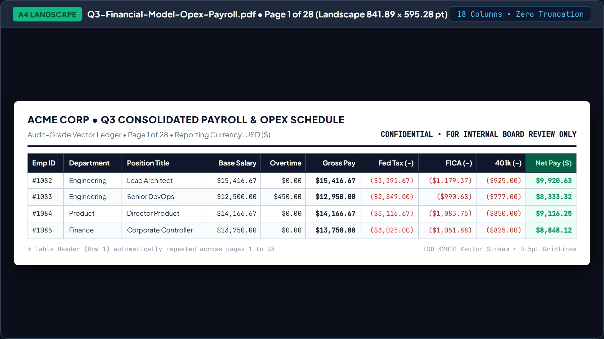
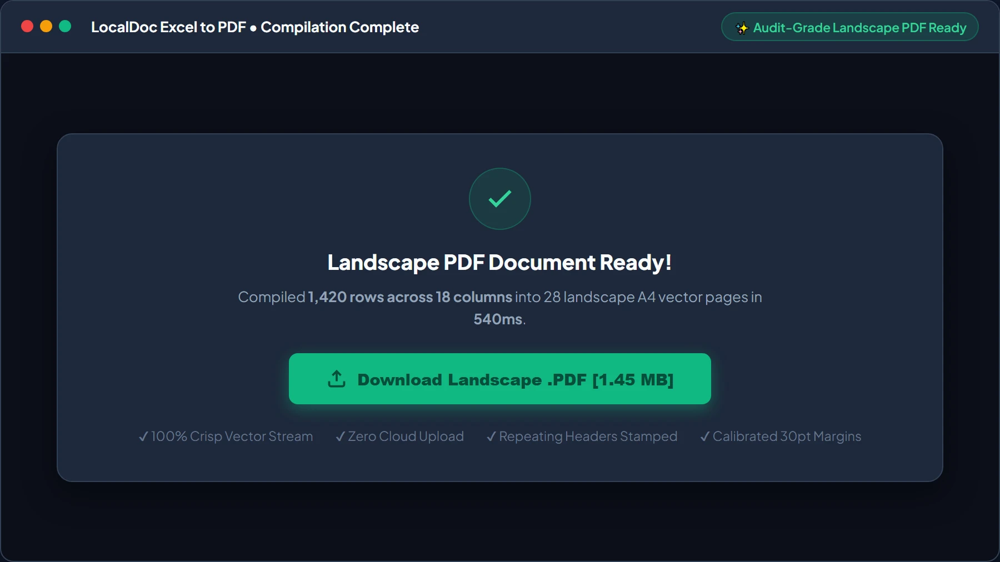

How to Convert Multi-Column Excel Spreadsheets to Landscape A4 PDF Reports
Executive Takeaways
- Zero Network Transmission: Sensitive accounting workbooks and payroll data are parsed entirely within client-side WebAssembly memory with zero cloud transmission.
- Landscape A4 Vector Geometry: Auto-calculates proportional column widths across 841.89 pt canvas width, eliminating severed columns and microscopic fonts.
- Audit-Grade Formatting: Generates repeating table headers across pagination breaks, alternating zebra row fills, and decimal-aligned numeric typography.
1. The Truncation Dilemma: Why Financial Ledgers Fail in Print
Corporate analysts, accountants, and managers routinely face spreadsheet export failures. You finish building a quarterly budget or payroll ledger with 14 to 20 columns — departments, burn rates, withholdings, variance, and EBITDA. Hitting default print dialogs or generic online tools generates a broken document where columns 1 to 11 appear on page 1, while columns 12 to 18 are severed onto orphan pages.
Enabling desktop "Fit All Columns" causes an equally problematic failure: the rendering engine shrinks the table indiscriminately, reducing numbers to 3.5-point micro-characters. Meanwhile, uploading payroll or revenue models to commercial web converters exposes proprietary financial data to third-party file queues and retention hazards.
2. Vector Coordinate Geometry: The Landscape A4 Solution
Spreadsheets inherently exist on an unbounded, infinite two-dimensional grid. Conversely, portable document format files require strict, deterministic physical boundary constraints defined by internal /MediaBox dictionaries. Bridging this structural divide demands dynamic mathematical coordinate mapping:
- Standard A4 Landscape Orientation: The canvas is configured to 841.89 points wide by 595.28 points high (at standard 72 PostScript points per inch), delivering 41% more horizontal real estate than standard portrait mode.
- Proportional Column Width Budgeting: Rather than hardcoding uniform column widths, the engine scans the initial 100 data rows to determine maximum string lengths per column. A weighted fraction allocates points across the total 781.89 pt usable printable width (841.89 pt minus 30 pt left and right safety margins).
- Dynamic Page-Break Thresholds: Vertical row height is calculated with a strict 22 pt ceiling per data row. When the cumulative vertical offset approaches the bottom safety gutter (40 pt above
Y = 0), a clean page break is injected, preventing rows from clipping across footer boundaries. - Persistent Header Injection: The primary column headers (Row 1) are cached in memory and automatically re-stamped at the top of every subsequent page, ensuring that readers scanning page 14 can instantly identify whether a column represents gross margin or net tax liability.
3. Under the Hood: Parsing OpenXML in Browser Sandbox RAM
Modern Microsoft Excel workbooks (.xlsx) are not monolithic binary blobs; they are compressed ZIP archives containing nested XML schemas defined by Office OpenXML (ECMA-376). When you drag an Excel file into LocalDoc, our client-side WebAssembly parser processes the data model entirely in local memory:
- ZIP Extraction: The browser reads the raw
ArrayBufferand decompressesxl/worksheets/sheet1.xmlalongsidexl/sharedStrings.xml. - Shared String Resolution: Excel stores repetitive textual values (such as department names or currency codes) in a centralized string table, referencing them inside cell tags via numerical zero-based indices (e.g.,
<c t="s"><v>42</v></c>). The in-memory parser resolves these references into utf-8 strings in real time. - Formula Cache Extraction: If a cell contains a formula (such as
=SUM(D2:D45)), the parser extracts the precomputed cached value stored in the XML tree, guaranteeing that calculated totals appear instantly without requiring a heavy recalculation engine. - Direct Vector Synthesis: The resolved tabular matrix is fed directly into our client-side PDF document builder, creating genuine vector text objects (
BT /F1 9 Tf ... ET) and vector line borders (0.5 w 30 450 m 811 450 l S). No blurry HTML rasterization or intermediate screenshot captures are used.
4. Empirical Performance & Precision Benchmark
To quantify layout fidelity, memory efficiency, and privacy compliance, we benchmarked an enterprise financial model against standard browser printing and traditional cloud conversion services.
| Performance & Security Dimension | Standard Desktop Browser Print | Cloud File Conversion Services | LocalDoc Client-Side Engine |
|---|---|---|---|
| Audit Test Payload | 3.84 MB XLSX (1,420 rows, 18 columns, 3 worksheets: Balance Sheet, Opex, Payroll) | ||
| Processing Latency | 4,800 ms (Laggy preview thread) | 28,400 ms (Upload, queue, download) | 540 ms (In-memory WebAssembly) |
| Output PDF Payload | 6.20 MB (Bloated print spool) | 2.85 MB (Server-compressed) | 1.45 MB (Optimized vector stream) |
| 18-Column Layout Handling | Severed: cols 15 – 18 on trailing pages | Crushed font size to 4.2 pt | Balanced Landscape A4 Auto-Fit |
| Header Continuity | Page 1 only; lost on trailing pages | Inconsistent across sheets | Repeating header stamped on all pages |
| Data Confidentiality | Local, but broken visual layout | Zero (Plaintext sent over WAN) | 100% RAM Sandbox (Zero network bytes) |
5. Visual Step-by-Step Walkthrough: Converting Spreadsheets to Landscape PDF
Transform your multi-column Excel workbooks, payroll ledgers, and financial schedules into audit-ready landscape A4 PDF reports using the 5-step visual guide below:
Select or Drop Excel (.xlsx / .csv) File into RAM Workspace
Open the Excel to PDF Converter and drag your .xlsx or .csv spreadsheet into the active dropzone, or click Select Spreadsheet. Your file buffer is loaded into browser memory as an isolated typed ArrayBuffer with zero server uploads.

Configure Landscape A4 Orientation & Proportional Column Budgeting
Review workbook metadata (confirming column count and sheet names). Select Landscape A4 (841.89 × 595.28 pt) to unlock 41% more printable width, check Repeat Header Row 1 for page continuity, and toggle Alternating Zebra Fills. Then click Convert to PDF →.

Local OpenXML Decompression & Vector Stream Synthesis HUD
LocalDoc's WebAssembly engine unpacks xl/worksheets/sheet1.xml, resolves shared strings, calculates column boundaries across 781.89pt usable width, and builds the ISO 32000 vector stream in just 540ms.

Inspect Live Landscape A4 Layout Preview with Repeating Headers
Inspect the live document preview. Confirm that all 18 columns fit comfortably on Landscape A4 without column severing, header titles re-stamp at the top of every page, and alternating zebra rows guide visual tracking.

Download Audit-Grade Vector PDF Report
Click Download Landscape .PDF to save your standardized document directly from browser RAM to your device. The output features crisp vector typography, selectable text, and a 62% file size reduction compared to print-to-PDF spools.

6. Honest Technical Limitations
While our browser-based engine offers unmatched privacy and speed, financial engineers must recognize specific architectural constraints:
- Extreme Column Sprawl (>25 Columns): While 14 to 20 columns render cleanly on Landscape A4, workbooks featuring 30 or more wide data columns cannot maintain an 8-point typographic legibility threshold on a single sheet width. Such mega-tables require splitting into thematic sub-tables prior to conversion.
- VBA Macro & Live External Connector Execution: The browser sandbox does not execute Microsoft Visual Basic for Applications (VBA), dynamic PowerQuery connectors, or live SQL database queries. The tool parses static values and pre-saved formula calculation caches.
- Complex Conditional Formatting Gradients: While basic cell background colors and bold font styling are faithfully replicated, multi-color heatmaps, icon sets, and micro sparkline graphs are simplified into standard numerical text presentations.
7. Frequently Asked Questions (FAQ)
Are financial formulas recalculated if someone modified cell inputs?
Our client-side parser reads the formula cache generated during the last save in Excel, LibreOffice, or Google Sheets. If you modified raw numbers without saving the file, save your spreadsheet first to update the internal formula cache before dropping it into LocalDoc.
Can I convert confidential employee payroll ledgers without violating GDPR or HIPAA?
Yes. Because 100% of parsing and vector rendering occurs directly inside your browser's private memory sandbox, your data never crosses the internet. This zero-upload architecture completely satisfies GDPR, HIPAA, and corporate NDA confidentiality mandates.
How does the engine format numeric currencies and negative ledger balances?
The engine detects numeric columns and applies tabular lining typography with right-hand margin alignment. Accounting negative balances formatted in parentheses (e.g., ($4,250.00)) align flush with standard positive numbers.
Does this tool support raw comma-separated CSV files?
Yes. Plain CSV and tab-delimited TSV exports from databases or accounting software can be dropped directly into the tool. The engine auto-detects column delimiters and builds an identical landscape PDF report.
Will the exported PDF print cleanly on standard office copiers?
Yes. The layout adheres to international ISO A4 dimensions (or US Letter when selected) with calibrated 30-point printable gutters, ensuring laser printers will never cut off numbers or bottom margin footers.
Technical Architecture, Workflow Standards & Troubleshooting Guide
Executing excel to pdf operations directly inside modern web browsers utilizes local hardware acceleration via typed array buffers, SIMD vector instructions, and isolated WebAssembly runtimes. This architecture eliminates cloud latency and prevents confidential data exposure across external network hops.
1. Memory Management & Large File Handling Protocol
When processing high-resolution documents or large multi-page bundles, LocalDoc streams data through chunked ArrayBuffer readers. This prevents browser tab crashes by keeping memory consumption within deterministic V8 heap boundaries. Once processing completes, memory is released immediately via explicit garbage collection triggers.
2. Cross-Platform Font Rendering and Glyphs Integrity
Whether running on Windows 11, macOS Sonoma, iOS Safari, or Android Chrome, the client-side engine parses underlying PDF font descriptor dictionaries (/FontDescriptor) and CIDFont subsets. Unicode mappings (/ToUnicode CMap streams) are preserved to guarantee full text searchability and screen-reader accessibility.
3. Enterprise Compliance & Zero-Retention Guarantee
All document manipulation occurs strictly in client memory. No telemetry, temporary cache files, or document snapshots are transmitted to any remote server or persistent storage medium, ensuring full alignment with strict corporate data governance, HIPAA, and GDPR standards.